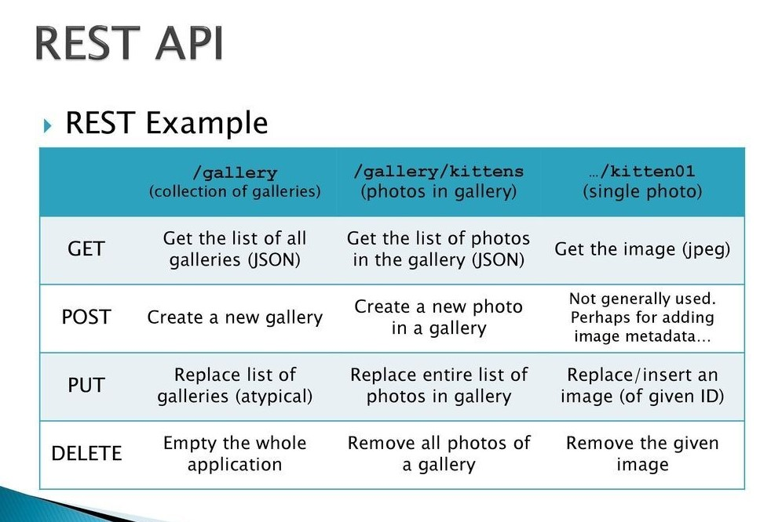

- What is API in general?
- What is Filesystem API?
- The main functions of the Filesystem API
- Examples of using Filesystem API
- Supported programming languages
- Features and potential issues
- Conclusion
The main functions of the Filesystem API
- Creating and deleting files and directories
- Reading and writing data to files
- Moving and renaming files and directories
-
Getting information about files and directories, such as size, creation date, permissions,
etc
- Checking the existence of files and directories
Examples of using Filesystem API

Supported programming languages
The Filesystem API is available in various programming languages. Here are a few examples:
- In Python, we can use the modules "os" and "shutil."
- In JavaScript, the "fs" module is available.
- In Java, we can utilize the "java.io.File" class.
-
Error Handling: It is necessary to handle potential errors, such as lack of access rights or
open files
- Text File Encodings: Consider encodings when reading and writing textual data
-
Path Management: Be attentive to managing file and directory paths, especially when working
across different operating systems
-
Security: Always validate user input to avoid vulnerabilities associated with file
operations
Thank you for your attention!